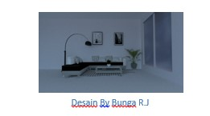
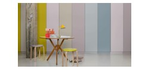
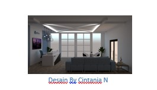
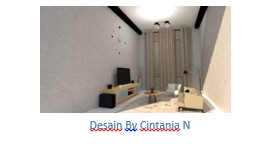

Ruang tamu adalah suatu ruangan yang ditujukan untuk menerima tamu saat berkunjung ke rumah. Ruang tamu berada dibagian paling depan rumah,sehingga menjadi ruangan pertama saat menjejaki kaki di rumah kita. Biasanya ruang tamu di beberapa rumah atau bangunan tidak terlihat rapih, sehingga para tamu yang datang ke rumah kita terlihat kurang nyaman dan berniat untuk buru-buru pulang. Hal di atas adalah salah satu contoh tidak adanya / tidak ditetapkannya desain interior di dalam ruang tamu tersebut.
Namun, sekarang kalian tidak perlu khawatir. Di sini kita akan memberikan kalian ide-ide yang bisa membuat ruang tamu kalian terlihat lebih nyaman dan estetik, agar para tamu kalian betah berlama-lama di rumah kita. Berikut ide-idenya :
1. Penempatan furniture
Penempatan furniture yang salah seringkali membuat ruang terasa lebih kecil, sumpek, dan berantakan. Beberapa orang mungkin mengira bahwa penempatan furnitur tidak perlu diperhatikan, asalkan di dalam ruangan ada benda/ furniture sesuai keinginan kita. Namun pemikiran di atas adalah salah satu contoh pemikiran yang salah besar. Penempatan furniture adalah hal utama yang harus diperhatikan, digunakan, dan diletakkan sesuai fungsinya, serta letakkan furniture sesuai dengan kenyamanan orang lain.

2. Menggunakan warna netral
Penggunaan warna cat dinding sangat mempengaruhi kesan para tamu yang singgah di rumah kita. Sebenarnya untuk pemilihan warna dilihat juga dari tema yang digunakan, dan untuk warna netral masuk untuk ke tema apa saja. pemilihan warna netral sangat cocok diaplikasikan di ruang tamu karena membuat ruang tamu lebih luas dan lega serta lebih terang. Seperti contoh warna putih, dapat memancarkan cahaya sehingga ruang terlihat lebih terang.
3. Penambahan jendela besar

Jendela salah satu solusi agar ruangan kita terlihat lebih terang, tanpa bantuan lampu pada siang hari, karena cahaya matahari masuk ke dalam ruangan melalui jendela tersebut. Penambahan jendela besar jika membuat kita menghemat listrik pada siang hari karena tidak adanya penggunaan lampu berlebih.

4. Menggunakan furniture multifungsi
Bagi kalian yang belum mengetahui Multifungsi, Multifungsi di ( KBBI ) adalah mempunyai berbagai (tugas/fungsi). Sedangkan furniture multifungsi adalah furnitur yang memiliki lebih dari satu fungsi dalam satu benda. Pada dasarnya fungsinya sama saja dengan furniture lain, akan tetapi furnitur multifungsi memiliki nilai lebih. Salah satu contoh furniture multifungsi ; bos sofa bisa dijadikan tempat tidur, meja hias bisa juga digunakan untuk menaruh buku atau tanaman hias, serta banyak contoh lain agar bisa menghemat tempat atau ruang kosong.
5. Menambahkan, aksesoris namun tidak berlebihan
Penambahan aksesoris memang penting, fungsinya agar ruangan tidak terlihat kosong. Namun penggunaan aksesoris yang berlebih dan bisa membuat ruang berantakan dan terlihat lebih sempit. Maka dari itu gunakan aksesoris dengan sebaik mungkin agar lebih terlihat estetik.
6. Penggunaan karpet bulu
Penambahan karpet bulu di ruang tamu sangat baik, karena dengan adanya karpet bulu bisa membuat kita nyaman ataupun semakin lebih terlihat estetik. Selain itu karpet bulu memiliki kelebihan pada bahannya yang lembut dan hangat serta untuk peredam suara.

Beberapa ide di atas adalah ide-ide yang bisa kalian jadikan referensi untuk membuat ruang tamu kalian terlihat lebih nyaman dan estetik untuk ditempati. Jadi jangan lagi kalian salah langkah dalam mendesain ruang tamu kalian.
6 Ide Agar Rung Tamu Kalian Terlihat Nyaman dan Estetik